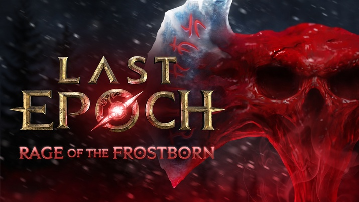

라스트 에포크 모르디타스의 격노 진행 순서, 피의 수정 발동부터 피의 격노 충전 모아 의식으로 보상 고르는 법
모르디타스의 격노는 피의 수정을 눌러 시작합니다. 처치 횟수가 20·50·90·140·200회를 넘길 때마다 피의 격노 충전이 하나씩 쌓이고, 2단계를 마친 뒤 나오는 피로 가득 찬 수정에서 그 충전으로 보상을 받거나 의식으로 바꾸는 순서예요.
피의 수정을 만났는데 충전을 어디에 써야 할지 막막하셨다면, 2026년 10월 2일 오전 1시(한국 시간)에 시작한 시즌 5(1.5)의 새 콘텐츠를 순서대로 풀어 볼게요. 게임메카 기사에는 '피의 결정'으로도 나오지만 스팀 한국어 패치 노트의 표기는 '모르디타스의 격노'와 '피의 수정'이라서, 검색하실 때는 이쪽 이름이 잘 맞아요.

라스트 에포크 시즌 5 키비주얼이에요.
모르디타스의 격노는 어떤 순서로 진행되나요?
진행은 1단계 타이머, 2단계 시련, 보상 고르기 세 구간으로 나뉘어요.
지역 안에 있는 피의 수정(Blood Crystal)과 상호작용하면 모르디타스의 그늘(Shade of Morditas)이 나타나면서 카운트다운이 시작되는데요, 지역에 들어서면 미니맵에 표식이 뜨니까 어디쯤 있는지는 미리 알 수 있어요. 전체 흐름은 이렇게 네 걸음이에요.
- 피의 수정을 눌러 모르디타스를 불러내면 타이머가 흘러요.
- 1단계에서 타이머가 남은 동안 최대한 많이 처치해 피의 격노 충전을 모아요.
- 타이머가 0이 되면 피얼음으로 둘러싸인 시련(2단계)이 시작되고, 그 안의 적을 전부 처치해요.
- 생겨난 피로 가득 찬 수정에서 충전을 써서 보상을 받아요.
처치 횟수별로 피의 격노 충전은 몇 개 쌓이나요?
피의 격노 충전(Bloodrage Charge)은 최대 5개까지 쌓이고, 처치 횟수별 개수는 아래 표와 같아요.
| 처치 횟수 | 20회 | 50회 | 90회 | 140회 | 200회 |
|---|---|---|---|---|---|
| 누적 충전 | 1개 | 2개 | 3개 | 4개 | 5개 |
충전 하나마다 28가지 버프 중 무작위 한 가지가 붙고, 이 버프는 인카운터가 끝날 때까지 유지돼요. 타이머는 처치할 때마다 늘어나는데 희귀한 적일수록 늘어나는 폭이 크고, 무한히 늘어나지는 않아요. 시작 시간은 맥스롤 정리 기준으로 캠페인 25초, 운명의 모노리스 20초이고 같은 버프는 겹쳐서 나오지 않는다고 하네요.
200회를 넘기면 타이머가 더 빠르게 줄어들기 때문에, 충전 5개를 채운 뒤에는 시간만 빨리 흐르는 구간이라고 보시면 돼요.
처치 횟수가 쌓이면 충전도 하나씩 늘어나요.
2단계 시련과 피로 가득 찬 수정은 어떻게 나오나요?
타이머가 0이 되면 피얼음으로 둘러싸인 시련이 시작되고, 1단계에서 처치한 적들이 전원 다시 등장해요. 이 적들을 모두 처치하면 피로 가득 찬 수정(Blood-Filled Crystal)이 생겨요.
1단계에서 붙은 버프는 인카운터가 끝날 때까지 유지되니까 2단계에서도 그대로 적용되고요, 시련을 빨리 끝내고 싶다면 전투 구역을 4초 동안 벗어나 있으면 된다고 공식 노트에 나와 있어요. 다만 일찍 끝냈을 때 보상 수정이 어떻게 되는지는 확인된 내용이 없어요.
피로 가득 찬 수정을 누르면 보상 패널이 열려요. 슬롯은 5개이고, 처음에는 장비 4개와 열쇠·제작 재료·자원 가방 같은 항목 1개가 올라오죠. 보상은 충전을 쓰기 전까지 그대로 남아 있어요.
장비 4개와 재료·열쇠류 1개가 한 판에 나란히 올라와요.
피의 격노 충전은 어디에 쓰나요?
충전 하나는 행동 한 번이고, 보상 수령·얼어붙은 의식(Frozen Ritual)·피의 의식(Bloody Ritual) 셋 중 하나에 쓸 수 있어요.
- 수령 — 고른 보상을 그대로 가져가요. 아이템을 가져가면 새 패널 5개가 새로 생겨요.
- 얼어붙은 의식 — 고른 보상을 희생해서 그 슬롯을 없애고 나머지를 다시 굴려요. 새로 나오는 보상은 희생한 것과 같은 아이템 종류로 다시 정해지고, 비슷한 접사가 붙을 확률도 올라가요. 이 의식으로 새로 생성된 희귀·숭고 아이템에는 얼음 제련 잠재력이 붙고, 얼음 제련 잠재력은 제작에 쓰면 일정 확률로 보존돼요.
- 피의 의식 — 고른 슬롯을 없애고 나머지를 다시 굴리되, 희생한 것과 같은 종류의 아이템은 보상을 고를 때까지 나오지 않아요. 이 의식으로 새로 생성된 희귀·숭고 아이템에는 피 제련 잠재력이 붙고, 피 제련 잠재력은 제작할 때 대성공 확률을 올려 줘요.
의식을 쓸 때마다 슬롯이 하나씩 줄어서 돌릴 수 있는 횟수에는 한계가 있거든요. 그래서 이렇게 갈라 쓰시면 충전이 덜 새요. 노리는 종류가 이미 패널에 있는데 접사가 아쉽다면 그 슬롯을 얼어붙은 의식으로 희생해서 나머지를 같은 종류로 다시 받고, 필요 없는 종류가 자꾸 끼어 있다면 피의 의식으로 그 종류를 밀어내는 식이에요.
충전 하나로 셋 중 하나만 고를 수 있어요.
엔드게임의 노여움은 격노와 뭐가 다른가요?
노여움은 엔드게임에서 따로 쌓고 줄이는 수치이고, 지금까지 설명한 피의 수정 한 판의 충전과는 별개의 시스템이에요.
공식 노트에 따르면 운명의 모노리스에서 적들을 처치하면 모르디타스의 노여움이 서서히 증가하고, 노여움이 높을수록 난이도와 각 메아리를 완료한 뒤 받는 보상의 양이 늘어나요. 메아리는 모르디타스 엮인 메아리 3종이에요. 수치를 낮추고 싶을 때는 연결체 창의 모르디타스 활동 창에서 모르디타스를 달래면 되고요, 캠페인에서 치른 격노는 이 진행도에 들어가지 않는다고 맥스롤은 정리하고 있어요.
노여움은 연결체 창의 모르디타스 활동 창에서 확인하고 낮춰요.
처치마다 늘어나는 타이머의 정확한 초 수치와 노여움 단계별 증가 폭은 아직 공개된 값이 없어요. 28가지 버프의 영문 이름은 맥스롤 목록에 있고, 한국어 이름은 인게임에서 직접 확인이 필요해요.
핫픽스로 바뀐 점은 뭔가요?
공식 포럼 핫픽스 노트와 패치 노트로 확인되는 모르디타스 관련 변경은 10월 10일 1.5.2.1까지예요. 날짜는 모두 한국 시간이에요.
- 1.5.0.1(10월 2일) — 모르디타스의 격노 보상 메뉴가 예기치 않게 사라지던 문제 수정
- 1.5.1(10월 3일) — 보상이 이미 망가진 상태로 나오던 문제 수정. 정점 모르디타스 레거시·오프라인 개방도 이 패치에 들어 있어요.
- 1.5.1.1(10월 3일) — 시련에 몬스터가 부족해 완료할 수 없던 문제 수정, 시련 중 Wolven Cocoons와 Dusk Spiders가 다시 생성되지 않게 변경, 보상이 이미 망가진 상태로 나오던 문제 추가 수정
- 1.5.2(10월 8일) — Revitalizing Rage가 잃은 생명력당 보호막 효과를 가진 캐릭터에 적용되지 않도록 조정, 시련 단계의 처치가 엮는 자의 의지 진행에 반영, 오프라인 스폰 거리 수정
- 1.5.2.1(10월 10일) — Unsated Rage와 Withstand the Elements가 타락했을 때 변형 접사가 사라지던 문제 수정
자주 묻는 질문
Q. 피의 수정은 어디서 만나나요?
캠페인 2장 이후와 메아리, 운명의 모노리스에서 등장해요. 영문 클라이언트에서는 지역에 들어서면 'Anger is building up in the air'라는 메시지가 뜬다고 알려져 있어요.
Q. 못 쓴 충전은 다음 판으로 넘어가나요?
충전은 이월되지 않아요. 패널을 비우기 전에 다 써 두시는 게 좋죠.
Q. 보상으로 어떤 아이템이 나오나요?
모르디타스 전용 아이템 하위 유형이 18종이에요. 맥스롤 정리 기준으로 변형 고유 아이템은 Withstand the Elements 장갑과 Unsated Rage 반지가 있어요.
모르디타스의 격노 정리
처치는 200회까지만 보시면 되고, 충전은 2단계를 마치고 패널을 본 다음에 정하는 걸 추천드려요~ 즐겜하세요!
참고한 곳 (2026.10.14 기준)
· 스팀 라스트 에포크 1.5 패치 노트
· 공식 포럼 핫픽스 1.5.0.1 노트
· patched.gg 1.5.1 패치 노트
· 공식 포럼 핫픽스 1.5.1.1 노트
· 공식 포럼 핫픽스 1.5.2.1 노트
· patched.gg 1.5.2 패치 노트
· 맥스롤 Rage of Morditas 정리
· HowToVideoGame Rage of Morditas 정리